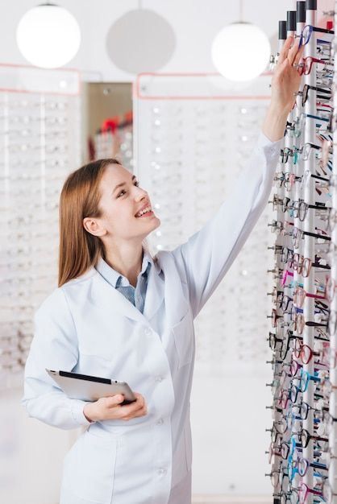
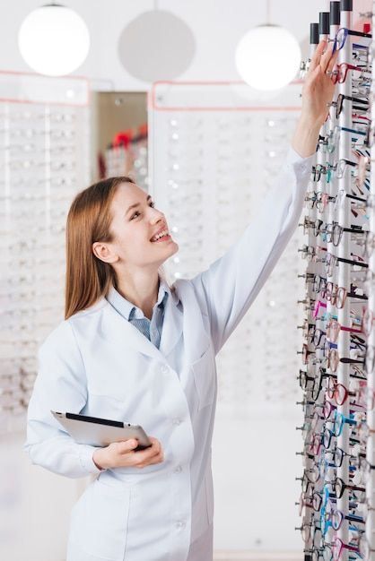

Мережа сучасних офтальмологічних центрів для всієї родини
 


Це швидкий безкоштовний тест, який допоможе Вам визначити,
чи є необхідність у консультації лікаря-офтальмолога для Вас або членів Вашої родини.
На основі результатів тесту Ви зможете отримати попередню оцінку стану зору
та рекомендації щодо подальших дій.
Високоточна діагностика за сучасними стандартами.
Підбір окулярів та контактних лінз для оптимальної корекції зору.
Сучасні методи лазерної хірургії для відновлення зору.
Ефективне лікування глаукоми, катаракти та інших захворювань очей.
Комплексна діагностика та лікування порушень зору у дітей різного віку.